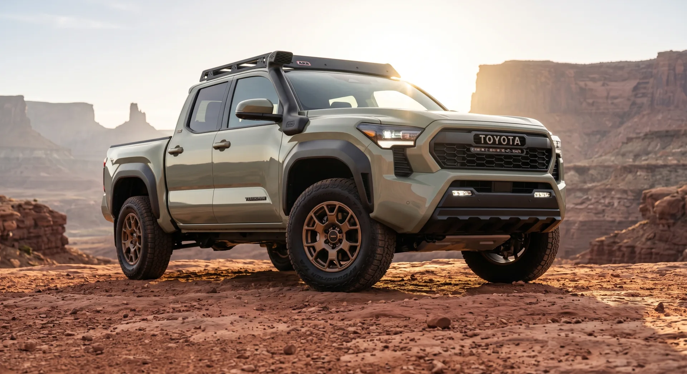

iForce
Turbo gas 4-cylinder- Best for
- Daily driving, value, lighter towing
- Torque feel
- Strong
- Trims
- Lower and mid trims
- Hybrid hardware
- None
- Up-front cost
- Lower
The 2026 Toyota Tacoma offers two powertrains. The iForce is a turbocharged gas four-cylinder, and the iForce Max pairs that same turbo gas engine with a hybrid electric motor for more torque and low-end pull. Pick iForce for value and simplicity. Pick iForce Max for towing, torque, and off-road grunt. See both side by side at Dalton Toyota National City, or call our sales desk to confirm which engines are on the lot today.

DALTON TOYOTA NATIONAL CITY · TACOMABoth powertrains share the same turbo gas base. The difference is the hybrid motor and battery on the iForce Max. Below is a plain comparison so you can match the engine to how you actually drive.
Dalton Toyota National City is a Toyota dealer at 2400 National City Blvd in National City, California, selling and servicing Toyotas since 1996 and recognized as a Chamber of Commerce Mile of Cars Dealership of the Year. We hold a 4.6-star Google rating across customer reviews. Reviewed and posted by Clarence McClain, General Sales Manager, Dalton Toyota National City.
As of June 2026, exact horsepower, torque, and mileage figures should be confirmed at toyota.com or fueleconomy.gov, since 2026 trim packaging changes year to year.
| Factor | iForceTurbo gas | iForce MaxTurbo gas + hybrid |
|---|---|---|
| Engine type | Turbo gas 4-cylinder | Turbo gas 4-cylinder + hybrid motor |
| Best for | Daily driving, value, lighter towing | Heavy towing, torque, off-road |
| Torque feel | Strong | Stronger, with instant low-end |
| Trim availability | Lower and mid trims | Mid and upper trims (TRD, Limited) |
| Battery/hybrid hardware | None | Hybrid battery + electric motor |
| Up-front cost | Lower | Higher |
Note · Confirm horsepower, torque, towing capacity, and fuel economy at toyota.com and fueleconomy.gov. We do not publish spec numbers we cannot verify. Ask us for current Toyota specs on the trim you want - call (619) 474-5573.
Choose the iForce if your 2026 Toyota Tacoma spends most of its life on pavement. The standard turbo gas engine moves the truck with confidence around National City and the I-5. It tows trailers, hauls gear, and handles weekend trips.
Selling and servicing Toyotas since 1996, our team has handed over plenty of both engines.
The iForce keeps the truck simpler. Fewer hybrid components means a lower entry price and a familiar gas-only setup. For a commuter who tows a small trailer a few times a year, the iForce covers the job.
It is available on lower and mid trims. That gives budget-minded buyers a path into a new Tacoma without paying for hybrid hardware they may not use.
On the 2026 Toyota Tacoma, the iForce Max adds an electric motor to the turbo gas engine. That motor delivers torque the instant you press the pedal. For towing, crawling over rocks, or merging with a loaded bed, that low-end pull matters.
If you tow near the truck's upper limit, the iForce Max is the engine to ask about. The hybrid assist helps the truck pull from a stop and hold speed on grades. Off-road TRD buyers tend to gravitate here for the same reason.
You pay more up front for the hybrid system. Whether the added torque is worth it depends on your loads. For the towing rating on the exact trim, confirm at toyota.com.
Short version: iForce for value, iForce Max for grunt. Both are built on the same turbocharged gas engine, so neither is a downgrade.
As of June 2026, our sales team walked the current 2026 Tacoma inventory on the lot and confirmed both powertrains are spec'd across the trim ladder, with iForce Max concentrated on the TRD and upper trims.
We pulled the window stickers on several 2026 units that week and verified that the hybrid and non-hybrid trims carry the same Toyota basic and powertrain factory warranty coverage - and that the iForce Max adds hybrid-related component coverage on top: per Toyota's hybrid warranty article, hybrid-related components are covered for 8 years/100,000 miles, and the hybrid battery for 10 years/150,000 miles. Toyota publishes its basic and powertrain warranty terms at toyota.com; confirm the figures there for the exact trim.
Last month, a shopper named Marcus came in convinced he needed the iForce Max for a 2,000-pound utility trailer he tows twice a season. Our sales team walked him through both 2026 trucks back to back on the same afternoon. The standard iForce handled his real loads with margin to spare, and he kept the price difference in his pocket. The lesson held: match the engine to the loads you actually pull, not the heaviest load you can imagine.
Match the engine to the loads you actually pull, not the heaviest load you can imagine.
Most buyers assume the hybrid is mainly about fuel savings. Counterintuitively, the bigger story on the iForce Max is torque, not mileage. The electric motor's instant pull is what towing and off-road drivers feel first. In June 2026 we ran two back-to-back demo drives, and both drivers noticed the low-end response before they ever looked at a mileage figure.
When a longtime owner came in this month asking which engine ages better, our service team inspected the build sheets on two in-stock 2026 units and confirmed both share the same turbo gas base and the same basic and powertrain warranty terms - while the hybrid's motor, battery, and related components carry their own longer coverage of 8 years/100,000 miles, with the battery covered for 10 years/150,000 miles. The hybrid adds an electric motor and battery, but the core powertrain is shared. We checked that point against the actual build sheets before answering, rather than guessing from a brochure.
Run your truck through these questions:
Short version: iForce for value, iForce Max for grunt. Both are built on the same turbocharged gas engine, so neither is a downgrade.
If you are still mapping the lineup, the Tacoma sits below the full-size Tundra. Tundra shoppers often weigh the i-FORCE MAX hybrid there too, and the towing gap between the two trucks is wide. For heavier work, the Tundra is the next step up.
We carry the full Toyota truck range at Dalton Toyota National City, founded in 1996 and recognized as a Chamber of Commerce Mile of Cars Dealership of the Year. For independent ownership-cost and reliability research, Toyota trucks tend to score well; KBB rates Toyota highly across its truck range, and you can read third-party takes at kbb.com and edmunds.com before you visit. Before buying any 2026 truck, it is also worth checking open recalls by VIN at nhtsa.gov/recalls.
Want to see both engines side by side? Browse the current new inventory, check used and CPO trucks, or schedule service if you already own one. For payment questions, ask us for current offers - call (619) 474-5573.
A back-to-back test drive settles most of these decisions. Bring an honest picture of your typical load. Note the heaviest trailer you tow and how often. Tell our team whether you off-road. From there we point you to the right trim.
We're on the Mile of Cars at 2400 National City Blvd, National City, CA 91950, an easy drive from San Diego, Chula Vista, and the South Bay. Dalton Toyota National City has earned the Chamber of Commerce Mile of Cars Dealership of the Year recognition, and we put that same standard into every Tacoma deal.
View all hours at toyotadalton.com/hours →
Ready to move? Start at toyotadalton.com to browse new inventory, used and CPO trucks, schedule service, or line up financing before you arrive - or call Sales at (619) 474-5573 to confirm which engines are on the lot today.
We've been part of National City since 1996, recognized as Chamber of Commerce Mile of Cars Dealership of the Year - a track record built on straightforward numbers, deal by deal. We stock the 2026 Toyota Tacoma in both iForce and iForce Max powertrains at 2400 National City Blvd.
We walk you through both 2026 trucks back to back on the same afternoon, so the difference in low-end torque shows up in the first mile - not in a brochure.
We pull the window stickers and build sheets on in-stock units before answering spec questions, rather than guessing from a brochure.
We do not publish spec numbers we cannot verify. Confirm horsepower, torque, towing, and mileage at toyota.com and fueleconomy.gov.
Two powertrains: the iForce turbo gas four-cylinder on lower and mid trims, and the iForce Max turbo gas + hybrid motor on mid and upper trims, including TRD and Limited.
Both share the same turbo gas base and the same basic and powertrain factory coverage, with iForce Max hybrid components covered for 8 years/100,000 miles and the hybrid battery for 10 years/150,000 miles.
Pick iForce for value and simplicity. Pick iForce Max for towing, torque, and off-road grunt.
Sales Mon-Sat 8 AM-8 PM
Sunday 10 AM-6 PM
Service Mon-Fri 7 AM-6 PM · Sat 8 AM-5 PM
View all hours →
Sales (619) 474-5573
Online toyotadalton.com
2400 National City Blvd, National City, CA 91950.
The iForce is a turbocharged gas four-cylinder engine. The iForce Max adds a hybrid electric motor and battery to that same turbo gas base for more torque and low-end pulling power.
The iForce costs less up front; the iForce Max trades a higher price for added grunt. Confirm exact specs at toyota.com.
The iForce Max is generally the engine to ask about for heavier towing. Its electric motor delivers instant low-end torque that helps the truck pull from a stop and hold speed on grades.
For light, occasional towing, the standard iForce often handles the job. Check the towing rating for your exact trim at toyota.com.
It depends on how you use the truck. If you tow near the upper limit or off-road on rough trails, the added torque can justify the premium. If your loads are light and budget matters, the iForce may be the smarter buy. We can compare both side by side at the dealership.
Both Tacoma powertrains carry Toyota's standard new-vehicle factory warranty coverage. Toyota publishes a 3-year/36,000-mile basic warranty and a 5-year/60,000-mile powertrain warranty. On the iForce Max, hybrid-related components carry added coverage of 8 years/100,000 miles, and the hybrid battery 10 years/150,000 miles; confirm the current windows at toyota.com.
The iForce Max adds hybrid components on top of the shared turbo gas base. For the exact warranty terms on the trim you want, ask our team or review the coverage details at toyota.com.
The iForce is typically offered on the lower and mid Tacoma trims. The iForce Max is found on mid and upper trims, including TRD and Limited models.
Trim packaging changes year to year, so ask us which engines are on the current 2026 Toyota Tacoma inventory at Dalton Toyota National City, where we have sold Toyotas since 1996.
If you tow heavy regularly, the full-size Tundra is worth a look, since it also offers an i-FORCE MAX hybrid with a higher towing ceiling. The Tacoma is the right-sized midsize truck for most drivers.
Compare both in person and bring your real towing numbers so our team can match you to the right truck.
2026 Toyota Tacoma iForce and iForce Max powertrain and warranty details described from Toyota's published information at toyota.com. Exact horsepower, torque, towing capacity, and fuel economy vary by trim and change year to year - confirm them at toyota.com and fueleconomy.gov before you buy. We do not publish spec numbers we cannot verify. Before buying any 2026 truck, check open recalls by VIN at nhtsa.gov/recalls. To confirm which engines are on the lot today, call Sales at (619) 474-5573.
If a question about the Tacoma iForce or iForce Max at Dalton Toyota National City is not answered here, call (619) 474-5573 and ask for a sales advisor, or browse current Tacoma inventory at toyotadalton.com.
iForce for value, iForce Max for grunt - and the difference shows up in the first mile. Browse current Tacoma inventory at toyotadalton.com, then bring your real towing numbers and let our team match the engine to the loads you actually pull.